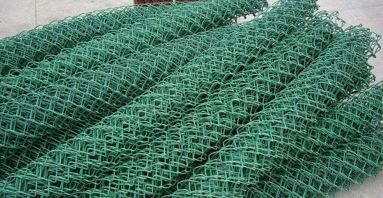

重庆球场围栏网：构筑体育空间的坚固防线
发布时间：2025 年 3 月 11 日
重庆球场围栏网作为体育设施的重要组成部分，随着城市体育事业的蓬勃发展，需求日益增长。它广泛应用于各类球场，不仅保障运动安全，还提升了场地的专业性与美观度。本地企业在市场推动下积极创新，产品多样且品质优良。技术创新为球场围栏网带来性能突破，新材料、新工艺不断涌现。同时，相关部门的监管促使行业规范发展。未来，重庆球场围栏网行业将在机遇与挑战中持续进步，为城市体育发展提供坚实支撑。
在重庆这座充满活力的城市，体育事业正蓬勃兴起，各类体育场馆和球场如繁星般点缀在城市的各个角落。而球场围栏网作为这些体育设施的重要基础设施，正发挥着举足轻重的作用。随着市民对体育运动的热情不断高涨，以及城市体育赛事的日益丰富，对高品质球场围栏网的需求也呈现出爆发式增长。 球场围栏网在不同类型的球场中有着极为广泛且关键的应用。在足球场上，坚固的围栏网有效阻挡足球飞出场地，避免对场外人员和设施造成干扰，同时也为球员们划定了清晰的比赛区域，保障比赛的正常进行。在篮球场上，围栏网防止篮球弹出场外，减少捡球时间，让比赛节奏更加流畅。而且，它还能在一定程度上保障观众的安全，防止球员在激烈对抗中冲入观众区域。在网球场，精细的围栏网不仅能拦截高速飞行的网球，还因其较高的透明度，不影响观众的观赛视野，营造出良好的观赛体验。 重庆本地的球场围栏网企业在市场需求的强劲拉动下，不断发展壮大并展现出强大的创新活力。以 [企业名称 C] 为例，该企业专注于球场围栏网领域多年，汇聚了一批专业的研发与生产人才。凭借先进的生产工艺和精良的设备，企业能够生产出多种类型的球场围栏网。从传统的金属链式围栏网，到采用新型高强度塑料材质制成的耐腐蚀、抗老化围栏网，产品丰富多样，能够充分满足不同球场的独特需求。企业始终将产品质量视为生命线，严格遵循国际质量管理体系，对生产的每一个环节进行精细把控，确保每一片围栏网都具备出色的强度、稳定性和防护性能，在业内树立了良好的口碑。 技术创新成为推动重庆球场围栏网行业发展的核心动力。[企业名称 D] 勇于探索新技术、新材料的应用，成功研发出一种具有自清洁功能的球场围栏网。这种围栏网表面采用了特殊的纳米涂层，能够有效分解附着在表面的灰尘和污渍，在雨水冲刷下即可保持清洁如新，大大降低了后期维护成本。此外，在材料创新方面，企业将高强度碳纤维与合金材料相结合，生产出的围栏网不仅重量轻、安装简便，而且具备超强的抗冲击性能，即使在极端天气条件下也能保持稳定，使用寿命大幅延长。 为了规范重庆球场围栏网市场，保障消费者的合法权益，相关部门积极行动，加大了监管力度。制定了一系列严格的行业标准，对球场围栏网的材料规格、结构强度、防护性能以及外观质量等方面都做出了详细且明确的规定。这一举措促使企业不断提升产品质量和服务水平，推动整个行业朝着规范化、标准化、高质量的方向稳健发展。 展望未来，随着重庆体育事业向更高水平迈进，特别是在全民健身热潮持续升温以及大型体育赛事不断落地的背景下，球场围栏网行业将迎来更多的发展机遇，同时也面临着更高的挑战。企业需要持续加大研发投入，不断创新产品，提升产品的智能化水平和环保性能，以适应城市体育发展的新需求，为重庆打造更加完善、优质的体育设施环境贡献力量。